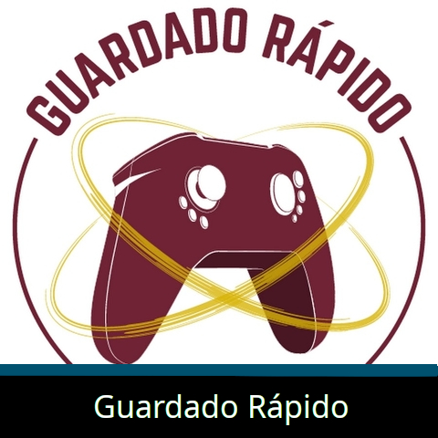
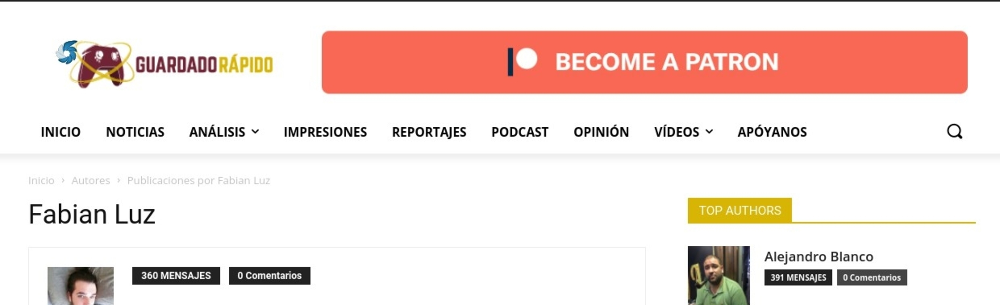

Analista y Redactor
La pasión que siento tanto por el mundo de la tecnología como por específicamente el de los videojuegos y especialmente la realidad virtual me ha abierto diversas oportunidades.
Entre ellas, está participar en el equipo de Guardado Rápido como Analista y Redactor tanto de noticias como de análisis de juegos. Mi especialidad se encuentra en la realidad virtual, que es el sector de la tecnología en el que más me he centrado en los últimos años.
He participado en Guardado Rápido desde 2020.